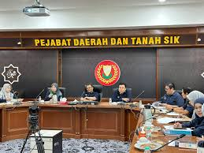

My experience during my internship at Pejabat Daerah dan Tanah Sik was incredible. Over two months, I gained hands-on experience in administrative tasks and data management. I contributed to improving office workflows and document organization, which gave me valuable insights into public sector operations.
I also made new friends and learned many new things. Below are some highlights of my internship:
- Assisted in organizing and digitizing documents for efficient retrieval.
- Managed data entry tasks and ensured accuracy in records.
- Improved workflows by suggesting process optimizations.
- Learned about public sector governance and administrative duties.
Here are some imagess from my time at Pejabat Daerah Sik:
Spending time at this organization allowed me to explore new areas and develop practical skills:
- Teamwork and collaboration.
- Professional communication.
- Critical thinking in problem-solving tasks.